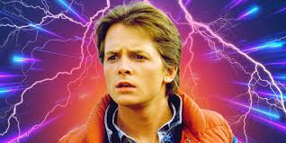

Back to the Future: Characters
Marty McFly
Portayed by: Micheal J. Fox
A charismatic and adventurous teenager, Marty McFly finds himself thrown back in time to 1955 when an experiment with a time-traveling DeLorean goes wrong. Armed with a skateboard, quick wit, and a love for rock ‘n’ roll, he must navigate the past while ensuring his parents fall in love—or risk erasing his own existence!
Doc Brown

Portrayed by: Christopher Lloyd
An eccentric and brilliant scientist, Doc Brown is the mastermind behind the DeLorean time machine. His wild hair, frantic energy, and catchphrase—“Great Scott!”—make him an unforgettable figure. Doc’s experiments may be unpredictable, but his heart is always in the right place as he helps Marty fix the timeline.